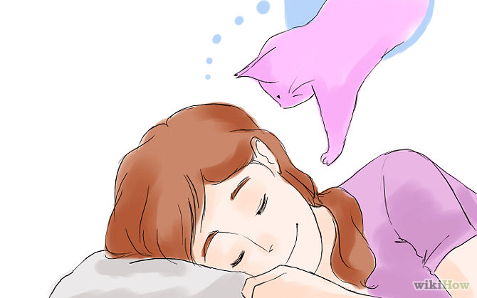

How to Find Your Spirit Animal
Is your spirit animal a wolf, owl, bear, crow, giraffe, lizard or butterfly? Spirit animals can help us feel more in tune with the earth and guide us to make the right decisions in life. You can't just choose a spirit animal, though; according to ancient beliefs, your spirit animal chooses you. Read on to learn how to find and connect with your spirit animal, a quest that has been undertaken by countless people over thousands of years.
Part 1 of 3: Gaining Awareness
- Spend Time in NatureThe earth is populated by innumerable animal species with something to teach us. If you're lucky enough to have a pet, perhaps you interact with animals sometimes, but a lot of people spend almost all of their time with other humans. Making the natural world a bigger part of your life opens you to the possibility of connecting with a spirit animal.
- Don't go out searching for a spirit animal; that's not the way it works. For now, be open to learning more about all non-human creatures.
- Look for inventive ways to spend more time in nature. If you don't live near wilderness, go to a state or national park, or a city park.
- When you spend time outside, remove your headphones and cut out any distractions. Become aware of your surroundings and notice things you might usually overlook: a bird peeking out of a bush, or a caterpillar walking across the sidewalk.
- When time doesn't permit a long trek outside, make your inside space more open to the natural world. Turn off the air conditioner. Open the blinds and the windows. Listen to the wind and the crickets instead of playing music.
- Recognize the wisdom and intelligence of animals.Spending more time in nature, especially around animals, will help you start to think of them differently. Notice their habits, the ways in which they communicate with one another, and the elements of their behavior that surprise you. Animals have intelligence all their own, different from but equal to that of humans. If that's difficult or impossible for you to see, it will be hard to find your spirit animal.
- Intelligence is about more than being able to solve math problems. Think about what type of intelligence different animals have. Migratory birds, for example, can fly thousands of miles to a pre-planned destination without a map.
- Don't anthropomorphize animals. They are not human, so don't expect them to express themselves the same way. It's important to respect animals for who they are, rather than assuming they'll communicate on your terms.
- Meditate and pray. Finding your spiritual animal is a spiritual and supernatural exercise. Perform a meditation or prayer session during which you concentrate on being open to communications from your spirit animal. Do it in a natural place like a meadow or a beach, or somewhere man-made, such as a park. Trust your instincts.
- If you want a concrete answer to a yes or no question, you probably won't find that in a spirit animal. It's not about getting what you want; it's about forging a deeper connection to nature, which will eventually lead you down the right path.
- Seek out your spirit animal if you're ready to be open to a different kind of wisdom and intelligence, and connect more deeply with the natural world. Remember that this has to be a mutual connection; you can't "conjure" the spirit animal at will. You gain most by being open to all possibilities.
- If your meditations and prayers seem fruitless, don't force it. Try again during a different season, or when your mind is in a different state. In the meantime, work on being more open and spiritually aware, by spending even more time out with mother nature.
Part 2 of 3: Recognizing Your Animal
- Pay attention to recurrent appearances of a particular animal in your life. Have you ever had a day, or week, when the same symbol seemed to keep coming to the fore? Perhaps you saw a mural of a wolf painted on the side of a building, and it struck you as beautiful so you stopped to take it in. Later you looked down to see a wolf tattoo on a woman's ankle in the coffee shop. That night you went home, turned on the TV, and if you look hard there might be a chance that an animal you see often to be on TV. The recurrence of animal symbols can mean your spirit animal is trying to get in touch.

- Take note of animals in your dreams. Spirit animals often appear to people at night in their dreams, when the mind is at rest and the subconscious is at work. If you tend to dismiss or forget your dreams, make a point of paying more attention. Take note of animals you encounter.
- Sometimes the appearance of a spirit animal isn't straightforward. You may dream of an animal in a painting on the wall, or a conversation in which the other person makes mention of a certain animal. All references to animals are worth noting.
- Write down your dreams and pay attention to patterns over time. What message do the animals seem to be communicating? Keep an open mind and try to interpret them.
- Be attentive to animals with unusual behavior. Many have reported encountering their spirit animal in physical form. Don't dismiss it if an animal comes close to you, makes sustained eye contact, runs ahead of you, hangs around your yard, or otherwise appears to be trying to communicate something.
- Keep a journal of your meditations. Some animals may come and go, and some may stay. Keeping a journal of your interactions with these animals will help you learn more about yourself and your animal totem.
-
- Consult a shaman. These spiritual mediums may have methods or advice for finding your spirit animal. Be aware that finding a shaman in your neighborhood isn't as easy as doing a Google search or looking in the phone book. You may have to ask around or investigate on your own.
Part 3 of 3: Connecting With Your Spirit Animal
- Learn about your animal.Once you've identified your animal, learn everything you can about it. What does it eat, and where does it live? Read about its history, behaviors, and the way it is portrayed in literature and the media. What does this animal represent?
- An animal's particular wisdom is called its "medicine," or power. This medicine can be used to help during a time of need. For example, a hawk's medicine might be its ability to see clearly when others can't.
-
- If possible, spend time near your animal's habitat. Don't be disruptive, but try to learn as much as you can about how the animal exists in the wild.
- Apply your animal's wisdom to your own life. Take what you have learned and use it to help you deal with making big decisions, confronting difficult situations, and reaching your goals. You can draw on your animal's wisdom in everyday life, too, in your treatment of others and the earth.
- Be open to messages. Pay close attention each time your animal appears to you in any form. Do your best to interpret the messages the animal seems to be sending. Remember, the messages won't be straightforward, since animals don't communicate the same way humans do, so you'll have to do some deep thinking to understand. Here are some questions to ask yourself:
- What emotions do you feel when the animal comes?
- Does the animal seem to be a sign of foreboding or comfort?
- Does the animal seem to be leading you in a certain direction?
- Honor your animal. It is believed in shamanism that you gain a deeper connection with your spiritual animal by honoring it. In doing this, you're letting it know that its assistance in helping you with your life is appreciated. You can do this by standing up for the environment and animal rights, and in particular the well being of your spirit animal. Remember that each time an animal species goes extinct, we lose the wisdom of that animal.